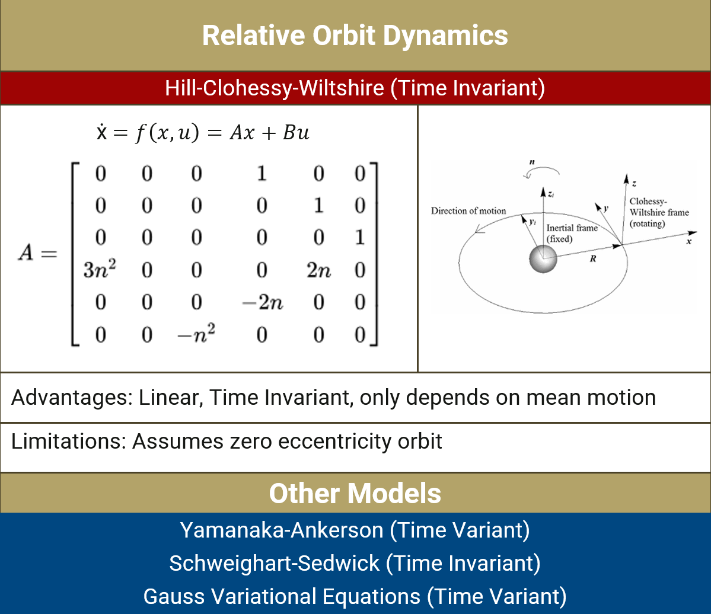
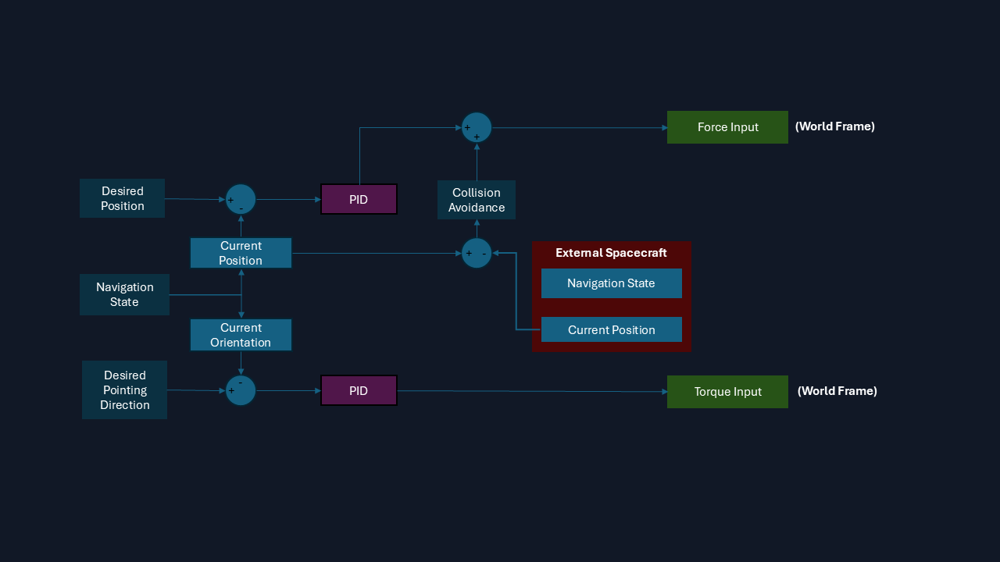
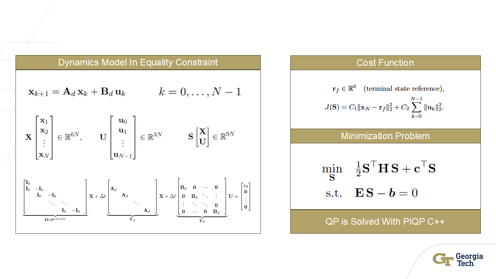
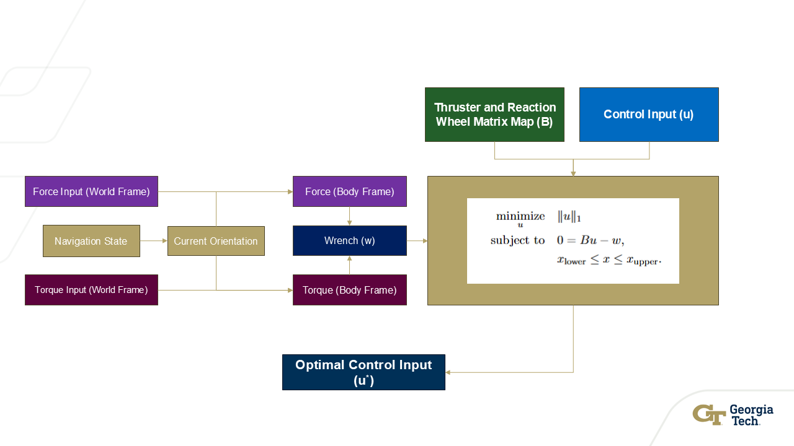
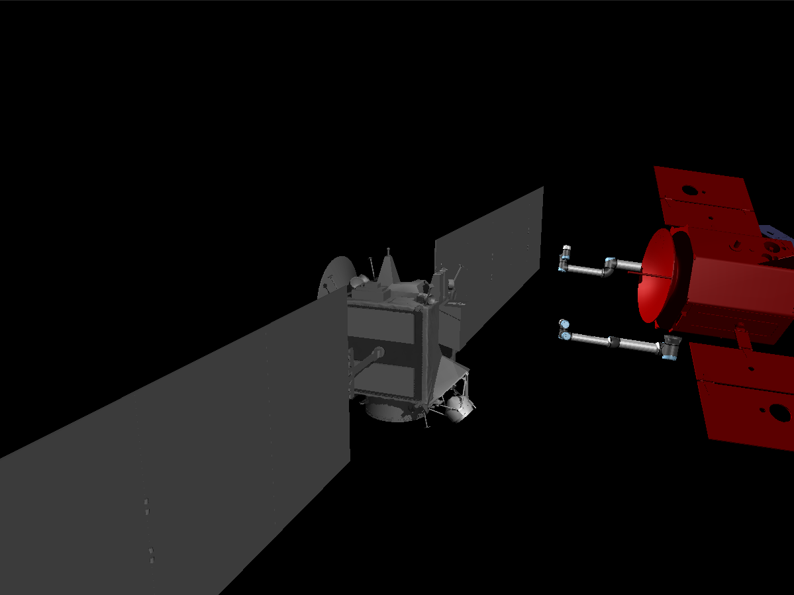
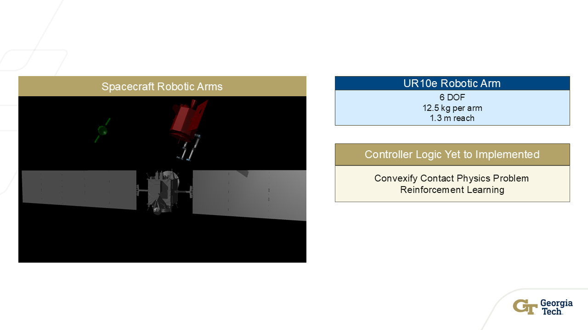
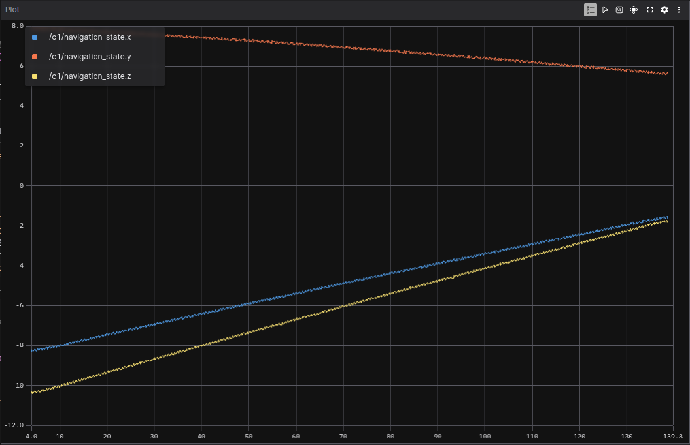

Overview
This high-fidelity simulation framework facilitates the development and testing of formation flight systems. The framework supports multiple dynamics models, guidance, navigation, and control (GNC) algorithms, spacecraft interactions, and state estimation/filtering techniques. Built on ROS 2, the physics simulation is powered by MuJoCo.
Framework
The framework uses MuJoCo as its physics engine for its capabilities in full 6-DOF rigid body dynamics, realistic joint contact physics, and customizable dynamics models. MuJoCo also provides sensor and actuator models along with OpenGL visualization, enabling accurate and visually informative simulations. The framework is built on ROS 2, which offers a modular architecture through nodes, topics, and services that facilitate parallel execution and precise simulation timing control. ROS 2's efficient launch and shutdown management capabilities ensure reliable and scalable operation, making it ideal for complex multi-agent spacecraft simulations.
Dynamics Modeling
The Hill-Clohessy-Wiltshire (HCW) equations provide a fundamental model for describing relative motion between spacecraft in formation flight. The HCW model offers significant advantages, particularly its linear time-invariant dynamics, which produce straightforward analytical solutions and efficient control system design. This linearity simplifies trajectory planning and makes the model computationally efficient for real-time applications.
The HCW model comes with inherent limitations, most notably its assumption of zero orbital eccentricity. This assumption restricts the model's applicability to circular orbits, making it less suitable for describing relative motion in elliptical orbital scenarios where more sophisticated models such as the Yamanaka-Ankerson or Schweighart-Sedwick equations may be required.
Hill-Clohessy-Wiltshire (HCW) equations and alternative dynamics models for relative orbit motion.

Video demonstration of a stable HCW relative orbit.
State Estimation & Navigation
The state estimation system employs a dual-sensor fusion approach to determine spacecraft navigation state. The IMU model, incorporating both accelerometer and gyroscope measurements, provides inertial data that is processed through a filtering algorithm such as an Extended Kalman Filter (EKF) or Unscented Kalman Filter (UKF), ultimately contributing to the navigation state estimation.
Additionally, the framework utilizes computer vision for relative state estimation. An RGB camera captures images of the target spacecraft, which are processed through a neural network to determine the distance (magnitude of relative position) between the chaser and target. The vision-based estimates are also filtered and integrated into the navigation state, creating a complementary sensor fusion system. Future development aims to enhance the neural network to recognize different sides of the target spacecraft, enabling full relative position estimation rather than just distance magnitude, which would significantly improve pose awareness and relative navigation capabilities.
Guidance
The guidance stack generates reference trajectories that respect mission objectives and collision-avoidance rules for every spacecraft in the formation. Desired relative orbits are expressed as time-varying setpoints derived from HCW solutions, rendezvous waypoints, or operator-specified inspection paths. Each agent evaluates feasible approach corridors, constraining separation distances, line-of-sight cones, and plume impingement limits before publishing guidance commands over ROS 2 topics.
Scenario-specific planners support impulsive burns for rapid retargeting as well as continuous-thrust profiles for fine station keeping. Guidance outputs are timestamped and synchronized across agents to maintain coherent formations, enabling cooperative maneuvers such as reconfiguration, leader–follower swaps, and coordinated inspection arcs.
Control
The control system implements separate but coordinated controllers for position and pointing (attitude) regulation. Position control manages translational motion, tracking the guidance stack’s relative position commands while incorporating collision avoidance to maintain safe separation distances from neighboring spacecraft. Pointing control manages rotational motion so that sensors, manipulators, and communications hardware maintain required orientations.
Both position and pointing control can be implemented using either PID controllers or Model Predictive Control (MPC). The MPC formulation solves an optimization problem over a finite prediction horizon, minimizing a cost function that penalizes tracking errors and control effort while satisfying constraints on states and control inputs. For position control, the MPC problem can often be formulated as a quadratic program (QP) due to the linear dynamics of relative motion, enabling fast real-time solutions. Pointing control presents additional complexity: attitude dynamics are inherently nonlinear due to the non-commutative nature of rotations. This nonlinearity requires the pointing control MPC to be formulated as a nonlinear optimization problem, necessitating Sequential Quadratic Programming (SQP) methods for solution. SQP iteratively approximates the nonlinear problem as a series of quadratic subproblems, handling the nonlinear constraints and dynamics associated with quaternion-based attitude representation and rotational motion.
PID controller architecture with collision avoidance for position and orientation control.

Model Predictive Control (MPC) formulation with dynamics constraints and cost function minimization.

Actuators
- Actuator configuration: Each spacecraft is equipped with 12 reaction control system (RCS) thrusters and 4 reaction wheels, providing redundant actuation for both translational and rotational control.
- Overactuated system: This redundancy creates an overactuated system where the number of actuators exceeds the number of controlled degrees of freedom, resulting in infinitely many solutions that can achieve the desired force and torque commands.
- Actuator allocation problem: The actuator allocation problem addresses this redundancy by solving an optimization problem that selects the optimal control inputs.
- L1 norm minimization: The allocation algorithm minimizes the L1 norm of the control input vector, which promotes actuator efficiency by encouraging sparse solutions that utilize fewer actuators.
- Optimization constraints: The optimization problem is subject to equality constraints ensuring that the generated wrench (combined force and torque) from the actuators matches the commanded wrench, as well as inequality constraints that enforce actuator limits (e.g., maximum thruster force and reaction wheel torque).
- Optimal solution: By solving this constrained optimization problem, the allocation function determines the most efficient combination of thruster firings and reaction wheel torques to achieve the desired control objectives while respecting physical limitations and minimizing overall control effort.
Actuator allocation optimization problem minimizing L1 norm with wrench equality and actuator limit constraints.

Simulating Interactions
- Robotic manipulator support: The framework supports spacecraft interactions through robotic manipulators, enabling complex on-orbit operations such as repositioning target spacecraft, performing maintenance tasks, or manipulating objects.
- Control challenges: These interactions present significant control challenges due to the complex dynamics of contact physics, multi-body kinematics, and the need to maintain stability while applying forces and torques during contact operations.
- Reinforcement learning approach: The RL approach would leverage machine learning to develop control policies that can adapt to varying contact conditions and learn optimal manipulation strategies through simulation experience.
- Convex optimization approach: The convex optimization approach would involve convexifying the contact physics problem, transforming the non-convex contact mechanics into a convex optimization problem that can be solved efficiently while ensuring feasibility and optimality of the manipulation trajectories.
- Unified goal: Both approaches aim to enable efficient control of robotic arms for autonomous on-orbit servicing and assembly operations.
Robotic arm interaction simulation with UR10e manipulators performing contact operations.

Overview of spacecraft interaction capabilities and robotic arm control architecture.

Validation
- Foxglove integration: Validation of the simulation framework is conducted using Foxglove, a powerful visualization and debugging tool that integrates seamlessly with ROS 2 through its native bridge.
- Real-time monitoring: The integration enables real-time monitoring and analysis of every ROS 2 node within the simulation, allowing users to visualize data streams as they occur.
- Comprehensive data visualization: All published topics, including sensor data, navigation states, control commands, and custom messages, are viewable and plottable directly within Foxglove.
- Multi-agent debugging: This capability is essential for debugging complex multi-agent interactions, verifying algorithm performance, and ensuring the fidelity of the physics simulation.
- Performance validation: By visualizing data streams in real-time, users can quickly identify anomalies, track system behavior, and validate the effectiveness of GNC algorithms and state estimation filters against expected performance metrics.
Foxglove interface showing real-time ROS 2 navigation state plots for validation and debugging.

Scalability
- Direct agent-to-node correspondence: Each spacecraft agent runs as an independent ROS 2 node with its own namespace, enabling parallel execution and modular expansion.
- Scalable camera simulation: Multiple spacecraft can carry vision sensors simultaneously and process their data independently.
- Distributed control logic: Complex guidance, navigation, and control algorithms can be distributed across nodes, with each agent maintaining its own GNC systems.
- Multi-arm support: The system handles multiple robotic arms per spacecraft, with independent control and physics simulation for each manipulator.
- Optical navigation scaling: Vision-based algorithms can be distributed across multiple agents, enabling relative positioning and formation-keeping capabilities across the entire formation.
- Efficient resource distribution: The modular, node-based architecture ensures computational resources are efficiently distributed, maintaining performance even as formation size and complexity increase.
Future Work
- Additional dynamics models: Integration of Yamanaka-Ankerson and Schweighart-Sedwick equations to support elliptical orbit scenarios and provide more accurate relative motion descriptions.
- Nonlinear GNC algorithms: Implementation of nonlinear guidance, navigation, and control algorithms to handle more complex mission profiles and improve performance in highly dynamic environments.
- Learned perception systems: Development of machine learning-enhanced neural network vision capabilities for more robust target recognition and relative pose estimation.
- Large-scale validation: Testing framework performance with extensive formation flight scenarios involving dozens of spacecraft.
- Vision-based filters: Development of filters to better integrate camera measurements with other sensor modalities, improving state estimation accuracy and robustness.
- Robotic arm interactions: Full implementation of control algorithms for autonomous manipulation tasks, including reinforcement learning and convex optimization approaches, enabling complex on-orbit servicing and assembly operations.